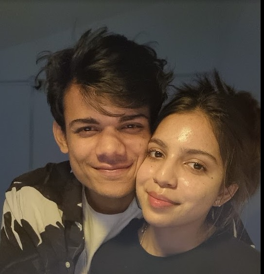
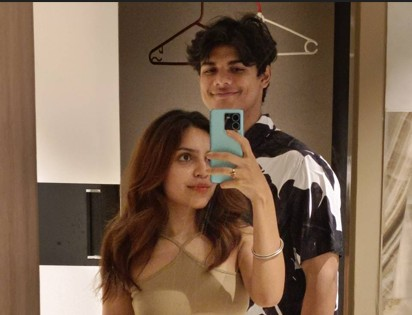

a small archive
Some people pass through you and change nothing.
You walked through, and rearranged the whole room.
I put these side by side because I wanted proof — not for you, but for me. Proof that the person on the left really did become the person on the right. And that you're the reason why.
Six things. Six befores. Six afters. All you.
I used to keep my face as still as I kept everything else. You noticed before I did — that I was hiding in plain sight. Now it shows when I'm happy. It shows when I'm not. You made it safe to stop performing calm.

afterI knew the word. I didn't know the practice — the showing up, the small repairs, the choosing again on the ordinary days. You didn't just love me. You demonstrated it, patiently, until I could finally do it back.
Loving you well meant learning to listen well, and that skill didn't stay contained to just us. It leaked into how I talk to my family, my friends, strangers on a bad day. You made me kinder by being kind to me first.

afterNot because you asked me to change. You never did. You just lived so honestly that standing next to you made my worst habits impossible to ignore. I wanted to deserve you. Trying to became its own kind of growing up.
Watching you commit to things — really commit, on the days it wasn't fun — made my own drifting look like a choice instead of a personality. You didn't lecture me into discipline. You just modeled it until I wanted it too.
This is the hardest one to write. I was harder to love than I like to remember — full of ego, quick to make things about me. You never gave up and walked away, but you also never let me stay there. You loved me and held a mirror up at the same time. That's the rarest thing anyone has done for me.
so, thank you
Every before on this page was real. So is every after. You're the difference between them.
I love you — endlessly, and on purpose.